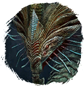
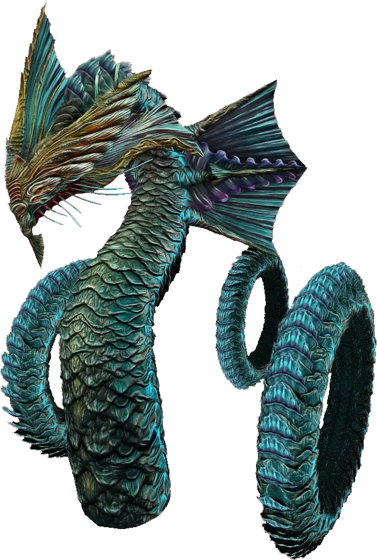

Открыть в интерактивной вики →

| Уровень | лёгк. 115 / норм. 135 / тяжел. 165 |
|---|---|
| Зоны атаки | ближняя, дальняя, ментальная |
| Шанс дропа 100% — уровни | лёгк. 1-120 / норм. 1-120 / тяжел. 1-140 |
| Шанс дропа 90% — уровни | лёгк. 121-140 / норм. 121-140 / тяжел. -- |
| Шанс дропа 70% — уровни | -- |
| Группа боссов | Тревога |
| Сила (PvE) | лёгк. 7573 / норм. 10 715 / тяжел. 15 683 |
| Аспект арены | Velhar |
| Здоровье | лёгк. 37 000 / норм. 76 666 / тяжел. 133 333 |
| Мана | 66 666 |
| Выносливость | 66 666 |
Навыки


Дроп
 Глиф Подмастерья
Глиф Подмастерья 
 Путь тревоги
Путь тревоги 


 V-VII
V-VII  Гроссмейстерский глиф
Гроссмейстерский глиф  Даймонит 60
Даймонит 60 | Рары | Синергетики | Эпики | |||
 Рары Рары Рары Рары Рары Рары Рары Рары | 70-80 ур. |  Эпики Эпики | |||
Прочее:  Путь тревоги Путь тревоги  Глиф Подмастерья Глиф Подмастерья | |||||
Требования для входа
все сложности: Вход раз в неделю на каждый уровень сложности
тяжел.:Путь тревоги
тяжел.:
Путь тревогиПуть по картам
Статистика
 |  |  | |||
| Уровень: 115 | Уровень: 135 | Уровень: 165 | |||
Здоровье: 37 000 Мана: 66 666 Выносливость: 66 666 | Здоровье: 76 666 Мана: 66 666 Выносливость: 66 666 | Здоровье: 133 333 Мана: 66 666 Выносливость: 66 666 |
Умения
| Групповой зев | Град Ледяной снаряд Плевок | Ярость Транс Обостренные чувства Аура холода Развеивание Отупление Снижение ОД Булавка в глаз Замораживание |
Иммунитеты / особые умения
-
Команда
-
Локация
Лаборатория Аква Регис